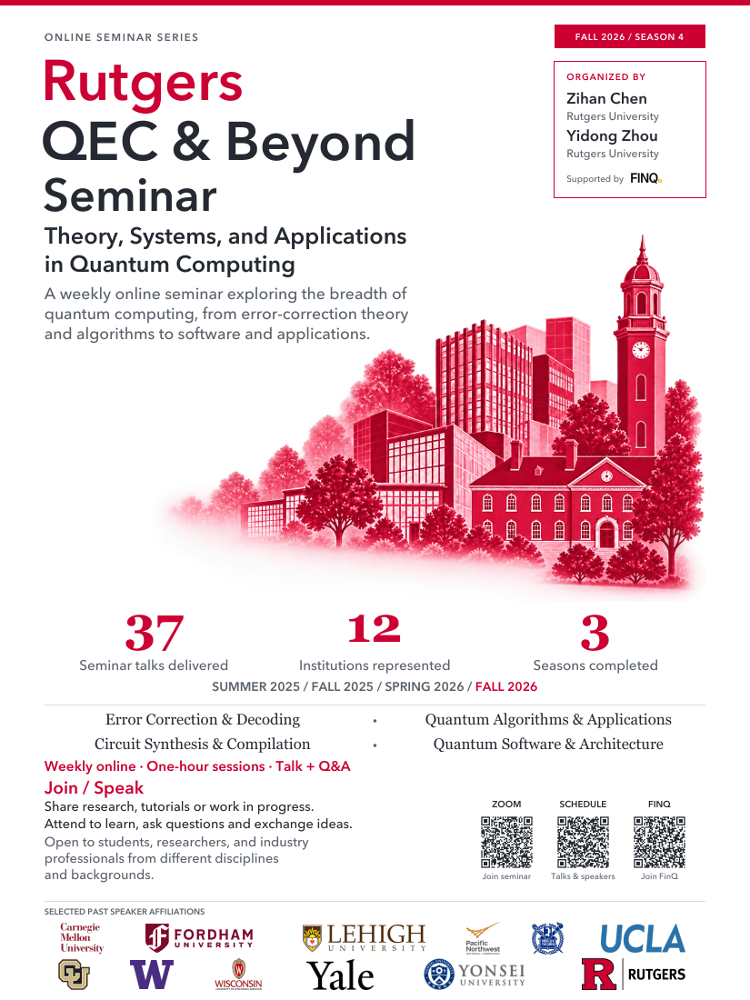
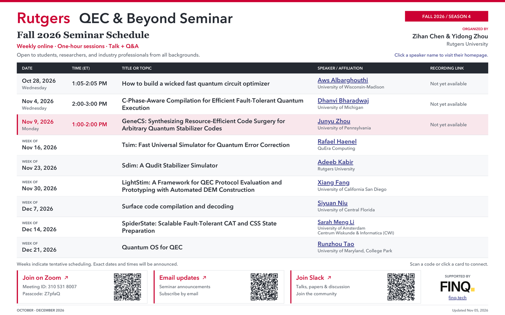
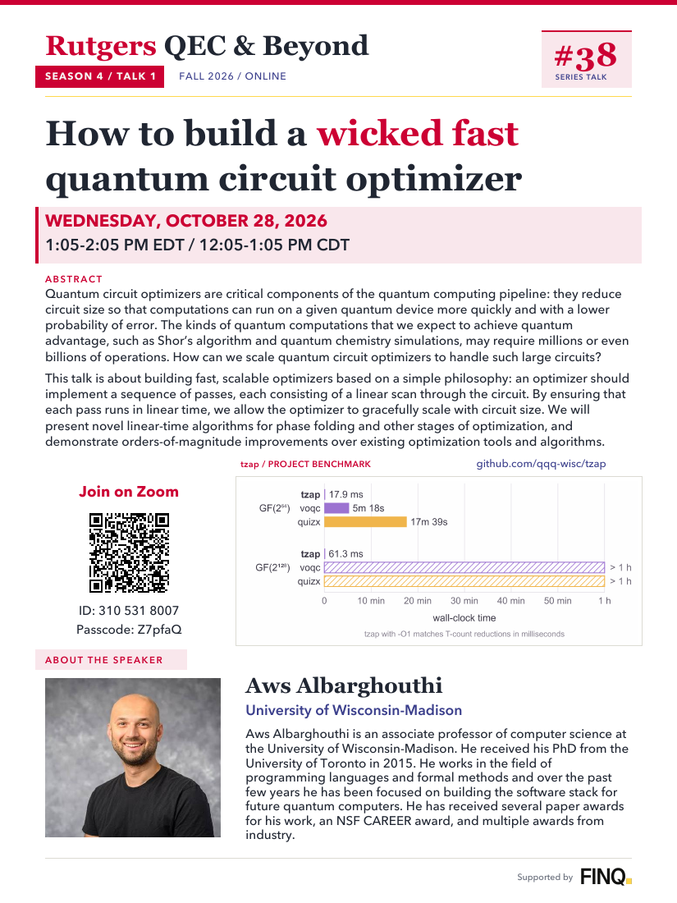
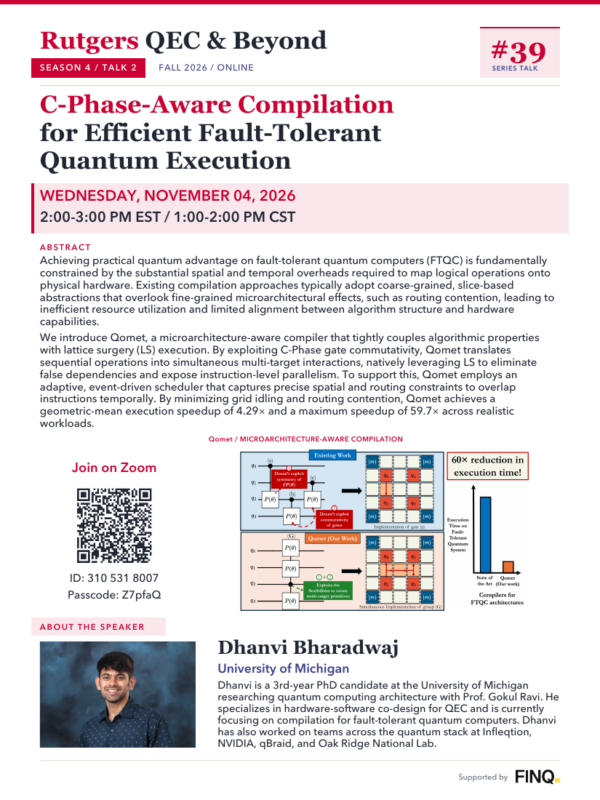
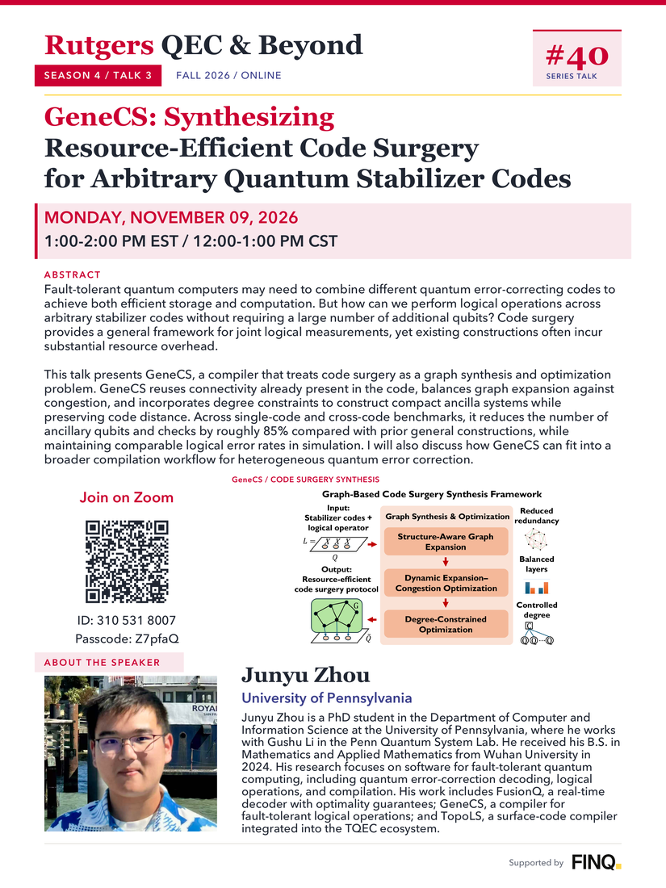

Series overview
Rutgers QEC & Beyond
Theory, systems, and applications in quantum computing. Organized by Zihan Chen and Yidong Zhou.
Open main poster (PDF) ↗Rutgers University · Fall 2026 / Season 4
A weekly online seminar exploring the breadth of quantum computing, from error-correction theory and algorithms to software and applications.
Series information and the semester schedule.

Series overview
Theory, systems, and applications in quantum computing. Organized by Zihan Chen and Yidong Zhou.
Open main poster (PDF) ↗
Fall 2026 · Season 4
Talks and speakers for October through December 2026. Updated November 5, 2026.
Open schedule poster (PDF) ↗Individual seminar posters, with abstracts and speaker biographies. See the schedule for dates and upcoming talks.

Talk #38 · Season 4, Talk 1
Aws Albarghouthi
University of Wisconsin-Madison
· 1:05–2:05 PM EDT
Open talk poster (PDF) ↗
Talk #39 · Season 4, Talk 2
Dhanvi Bharadwaj
University of Michigan
· 2:00–3:00 PM EST / 1:00–2:00 PM CST
Open talk poster (PDF) ↗Achieving practical quantum advantage on fault-tolerant quantum computers (FTQC) is fundamentally constrained by the substantial spatial and temporal overheads required to map logical operations onto physical hardware. Existing compilation approaches typically adopt coarse-grained, slice-based abstractions that overlook fine-grained microarchitectural effects, such as routing contention, leading to inefficient resource utilization and limited alignment between algorithm structure and hardware capabilities.
We introduce Qomet, a microarchitecture-aware compiler that tightly couples algorithmic properties with lattice surgery (LS) execution. By exploiting C-Phase gate commutativity, Qomet translates sequential operations into simultaneous multi-target interactions, natively leveraging LS to eliminate false dependencies and expose instruction-level parallelism. To support this, Qomet employs an adaptive, event-driven scheduler that captures precise spatial and routing constraints to overlap instructions temporally. By minimizing grid idling and routing contention, Qomet achieves a geometric-mean execution speedup of 4.29× and a maximum speedup of 59.7× across realistic workloads.
Dhanvi is a 3rd-year PhD candidate at the University of Michigan researching quantum computing architecture with Prof. Gokul Ravi. He specializes in hardware-software co-design for QEC and is currently focusing on compilation for fault-tolerant quantum computers. Dhanvi has also worked on teams across the quantum stack at Infleqtion, NVIDIA, qBraid, and Oak Ridge National Lab.

Talk #40 · Season 4, Talk 3
Junyu Zhou
University of Pennsylvania
· 1:00–2:00 PM EST / 12:00–1:00 PM CST
Open talk poster (PDF) ↗Fault-tolerant quantum computers may need to combine different quantum error-correcting codes to achieve both efficient storage and computation. But how can we perform logical operations across arbitrary stabilizer codes without requiring a large number of additional qubits? Code surgery provides a general framework for joint logical measurements, yet existing constructions often incur substantial resource overhead.
This talk presents GeneCS, a compiler that treats code surgery as a graph synthesis and optimization problem. GeneCS reuses connectivity already present in the code, balances graph expansion against congestion, and incorporates degree constraints to construct compact ancilla systems while preserving code distance. Across single-code and cross-code benchmarks, it reduces the number of ancillary qubits and checks by roughly 85% compared with prior general constructions, while maintaining comparable logical error rates in simulation. I will also discuss how GeneCS can fit into a broader compilation workflow for heterogeneous quantum error correction.
Junyu Zhou is a PhD student in the Department of Computer and Information Science at the University of Pennsylvania, where he works with Gushu Li in the Penn Quantum System Lab. He received his B.S. in Mathematics and Applied Mathematics from Wuhan University in 2024. His research focuses on software for fault-tolerant quantum computing, including quantum error-correction decoding, logical operations, and compilation. His work includes FusionQ, a real-time decoder with optimality guarantees; GeneCS, a compiler for fault-tolerant logical operations; and TopoLS, a surface-code compiler integrated into the TQEC ecosystem.